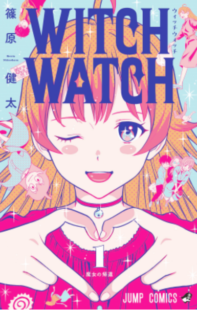

Có bao giờ bạn đọc xong một chương truyện, bật cười vì đoạn kết, rồi vài chương sau mới nhận ra tác giả đã chuẩn bị cho tình huống ấy từ trước? Đó là một trong những niềm vui của việc soi hint: khoảnh khắc bất ngờ không xuất hiện hoàn toàn từ hư không, mà có thể được xây dựng bằng những chi tiết nhỏ trong hành trình đọc.

Trong một cuộc phỏng vấn đăng trên MANGA Plus by SHUEISHA, Kenta Shinohara - tác giả Witch Watch - chia sẻ về cách ông nghĩ đến phần kết của một chương, sự bất ngờ và việc chuẩn bị những chi tiết cần thiết để phần kết ấy phát huy hiệu quả. Từ chia sẻ này, Góc Comic tổng hợp một số cách đọc giúp bạn nhận ra sự khác biệt giữa một chi tiết có tác dụng báo trước và một chi tiết chỉ tình cờ xuất hiện.
1. Phần kết bất ngờ thường cần một bước chuẩn bị
Trong cuộc phỏng vấn trên MANGA Plus, Shinohara nói về tầm quan trọng của việc tạo ra phần kết thú vị cho từng chương và chuẩn bị những yếu tố cần thiết để phần kết đạt hiệu quả. Ông cũng mô tả việc nghĩ ngược từ kết quả để xác định cần chuẩn bị những gì trong câu chuyện.
Đây là một góc nhìn hữu ích đối với người đọc manga. Khi một tình huống bất ngờ xảy ra, thay vì chỉ phản ứng “Không thể tin được!”, hãy thử quay lại những trang trước và hỏi: tác giả đã cung cấp dữ kiện nào để tình huống này có thể xảy ra?
Điều đó không có nghĩa mọi kết quả đều được dự báo rõ ràng. Một phần kết có thể bất ngờ chính vì thông tin đã được chuẩn bị nhưng chưa đủ để người đọc nhận ra ngay.
2. Không phải chi tiết nào cũng là hint
Một bộ manga có thể chứa rất nhiều yếu tố: trò đùa, hành động thường ngày, nhân vật phụ, vật dụng và những đoạn hội thoại không trực tiếp thúc đẩy cốt truyện.
Nếu xem mọi chi tiết đều là manh mối, người đọc rất dễ rơi vào tình trạng diễn giải quá mức. Vì vậy, hãy kiểm tra ba yếu tố:
- Sự liên quan: Chi tiết có liên quan đến sự kiện xảy ra sau đó không?
- Sự lặp lại: Nó có được nhắc đến hoặc xuất hiện lại trong một ngữ cảnh quan trọng không?
- Tác dụng: Khi kết quả được tiết lộ, chi tiết cũ có giúp giải thích kết quả ấy không?
Một chi tiết đáp ứng được những câu hỏi này có thể là một manh mối đáng chú ý. Nếu chưa có đủ bằng chứng, hãy giữ nó ở mức giả thuyết.
3. Vì sao đọc lại có thể thú vị hơn đọc lần đầu?
Lần đầu đọc, chúng ta thường tập trung vào việc theo dõi diễn biến. Khi đọc lại, chúng ta đã biết kết quả nên có thể nhìn thấy những chi tiết từng bị bỏ qua.
Đây là sự khác biệt giữa hai trải nghiệm. Lần đầu, câu hỏi là “Điều gì sẽ xảy ra?”. Lần sau, câu hỏi trở thành “Điều gì đã khiến chuyện đó có thể xảy ra?”.
Cách đọc thứ hai không chỉ giúp phát hiện manh mối. Nó còn giúp người đọc đánh giá cách tác giả sắp xếp thông tin, dẫn dắt sự chú ý và tạo nhịp cho một chương truyện.
4. Một bài tập nhỏ dành cho người thích soi hint
Hãy chọn một chương Witch Watch đã đọc và thử thực hiện bài tập sau:
- Bước 1: Ghi lại kết quả hoặc tình huống bất ngờ ở cuối chương.
- Bước 2: Quay lại những trang trước, chọn ba chi tiết có thể liên quan đến kết quả ấy.
- Bước 3: Với từng chi tiết, ghi rõ bằng chứng ủng hộ và bằng chứng phản bác cách giải thích của bạn.
- Bước 4: Đọc lại chương một lần nữa và xem liệu kết quả có còn bất ngờ không.
Nếu một chi tiết chỉ có vẻ quan trọng sau khi bạn đã biết kết quả, điều đó chưa đủ chứng minh nó là hint có chủ đích. Nhưng nếu chi tiết ấy thực sự góp phần chuẩn bị cho kết quả, bạn đã tìm thấy một ví dụ tốt về cách truyện tranh tổ chức thông tin.
5. Đọc hint có căn cứ thay vì đoán cho vui
Chia sẻ của Shinohara nhắc chúng ta rằng phần kết và những yếu tố chuẩn bị cho phần kết có mối quan hệ chặt chẽ trong quá trình sáng tác. Với người đọc, điều này mở ra một cách tiếp cận thú vị: không chỉ thưởng thức điều bất ngờ, mà còn khám phá cách câu chuyện tạo ra nó.
Tuy nhiên, chia sẻ của một tác giả không nên được xem là công thức áp dụng cho mọi manga. Mỗi người sáng tác có phương pháp khác nhau, và không phải tác phẩm nào cũng phát triển theo cùng một quy trình.

Điều quan trọng nhất vẫn là quay về bằng chứng trong truyện: chi tiết nào đã xuất hiện, nó liên quan thế nào đến diễn biến và cách giải thích của bạn có phù hợp với những gì tác phẩm thực sự thể hiện không?